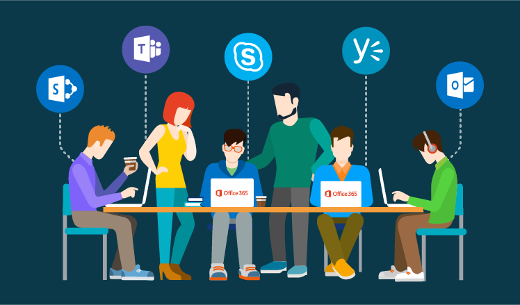
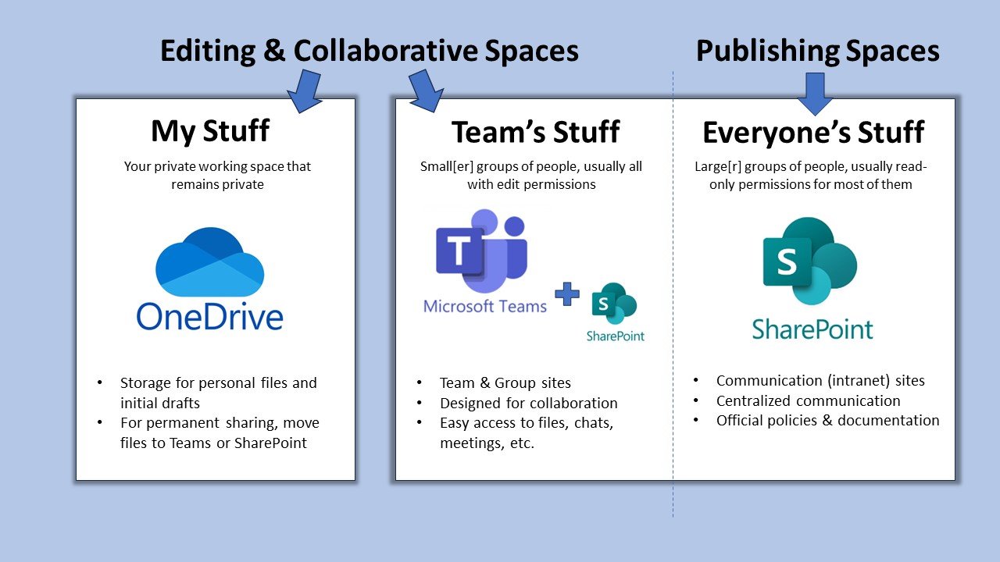

flowchart LR
A["Digital Collaboration"]:::a --> B["Data Management"]:::b
B --> C["Coding"]:::c --> D["Reproducibility"]:::d --> A
classDef a fill:#E3F2FD,stroke:#1565C0,stroke-width:1px
classDef b fill:#E8F5E9,stroke:#2E7D32,stroke-width:1px
classDef c fill:#FFF3E0,stroke:#EF6C00,stroke-width:1px
classDef d fill:#F3E5F5,stroke:#6A1B9A,stroke-width:1px
Digital Tools
Module Overview
- Module: EDS-M1 - Digital Tools
- Course: Essential Digital Skills (EDS)
- Audience: Early Career Researchers (PhD, Postdoc)
- Duration: ~40 minutes directed teaching (+4 exercises)
💡 Learning Outcomes
- Navigate core UoN digital ecosystem
- Apply digital best practices in collaboration & file organisation
- Manage your research identity
- Identify essential practices for secure research
❓ Questions
- What basic data tools I need to do research at UoN?
- How to I maintain a consistent online researcher identity?
- What digital tools may I need to support my research aims?
Structure & Agenda
- Introduction to the Digital Skills Programme (~10+10 min)
- Institutional Systems for Digital Research (~10+10 min)
- Research Identity and Profiles (~10+10 min)
- Digital Security & Good Practice (~10+10min)
🔧 4 Activities spaced every 10 minutes.
Introduction to the Digital Skills Programme

What is DS?
The Digital Skills programme equips researchers with the competencies required for modern, data-driven scholarship. it focuses on four interconnected themes:
💡 Digital collaboration, data management, coding, and reproducibility form the foundation of digital research practice.
Beyond Tools
The programme is not simply about tools:
It is about connecting researchers with the people who work with data, including data stewards, software engineers, and information specialists. These collaborations enable better use of data, improve the quality of research outputs, and support a more open and reproducible research culture.
🤝 Digital skills grow through collaboration between researchers and data professionals.
Connecting Researchers and Data Professionals
Modern research relies on shared understanding between disciplinary experts and technical specialists.
| Benefit | Description |
|---|---|
| Quality | Consistent data standards and metadata practices |
| Reproducibility | Shared methods and transparent workflows |
| Efficiency | Collaborative problem-solving across domains |
| Insight | Combining technical and disciplinary perspectives |
💬 Bridging communities builds stronger, more reproducible research.
Why Digital Skills Matter
Digital skills enable collaboration and efficiency across the research lifecycle.
flowchart TB
A["Data Collection"] --> B["Analysis"] --> C["Collaboration"] --> D["Publication & Sharing"]
D --> A
style A fill:#E3F2FD,stroke:#1565C0,stroke-width:1px
style B fill:#E8F5E9,stroke:#2E7D32,stroke-width:1px
style C fill:#FFF3E0,stroke:#EF6C00,stroke-width:1px
style D fill:#F3E5F5,stroke:#6A1B9A,stroke-width:1px
🔁 Digital literacy underpins the entire cycle of modern research.
Addressing Common Challenges
This course is about addressing the following challanges at a unversity level.
| Challenge | Digital Skills Response |
|---|---|
| Disconnected research silos | Shared tools and workflows (Teams, GitHub, RIS) |
| Data mismanagement | Version control, structured storage, FAIR principles |
| Limited collaboration | Integrated communication and documentation tools |
| Poor reproducibility | Use of open standards, coding literacy, and transparent sharing |
⚙️ Digital skills convert research challenges into structured improvements.
Collaboration Leads to Better Research
Collaboration is at the heart of the DS&DSP. By connecting researchers, data professionals, and support specialists, the programme builds a community of digital practice that strengthens the quality, openness, and impact of research across disciplines.
“Collaboration is not an add-on—it is the mechanism through which good research becomes great research.”
Programme Structure
The programme offers three tiers of learning, from foundational to applied and specialist skills.
| Level | Focus | Example Modules |
|---|---|---|
| Foundation | Core digital research competencies | Essential Digital Skills |
| Intermediate | Theory and collaboration in data science | Python, R, Software Engineering |
| Advanced | Applied analysis and discipline-specific practice | Bioinformatics, HPC, ML/AI |
🧩 Each tier builds practical capability and supports research independence.
Courses
| Course | Description | Duration | Note |
|---|---|---|---|
| Essential Digital Skills – Foundation | Introduces the tools, practices, and principles needed to participate confidently in digital research. | 4× half days | |
| Methods for Data Science – Theoretical | Introduces coding, software, and collaboration practices needed for sustainable research. | 4× half days | |
| Methods for Data Science – Applied Python | Provides practical experience in data analysis and interpretation using Python. | 2 days | Introductory and intermediate |
| Methods for Data Science – Applied R | Provides practical experience in data analysis and interpretation using R. | 2 days | Introductory and intermediate |
| Advanced | — | 1 day? | AI? ML? Bioinformatics? |
Task 1: Digital Skills Reflection
Let’s start by reflecting on your current digital research skills.
❓ What’s digital skills or tool you want to develop this year?
Institutional Systems for Digital Research

Why Institutional Systems Matter
Digital research depends on connected systems that enable collaboration, safeguard data, and streamline research workflows.
flowchart TB
A["Researchers"]:::a --> B["Institutional Systems"]:::b --> C["Collaborative Outputs"]:::c
C --> A
classDef a fill:#E3F2FD,stroke:#1565C0,stroke-width:1px
classDef b fill:#E8F5E9,stroke:#2E7D32,stroke-width:1px
classDef c fill:#FFF3E0,stroke:#EF6C00,stroke-width:1px
🧩 Institutional systems form the backbone of a connected research ecosystem.
UoN’s Digital Ecosystem
At the University of Nottingham, research operates within a digitally integrated environment that connects people, data, and administration.
| System | Primary Role |
|---|---|
| Microsoft 365 | Collaboration and communication |
| SharePoint | Long-term data and document sharing |
| UniCore | Finance, HR, and procurement |
| RIS (Worktribe) | Research lifecycle, funding, outputs |
🏛️ Together these platforms enable secure, collaborative, and transparent research practice.
Microsoft 365: A Platform for Collaboration
Microsoft 365 supports daily research activity—from communication to data management—within a single, integrated workspace.
| Tool | Function |
|---|---|
| Word & Excel | Writing, data capture, and co-editing |
| OneDrive | Personal cloud storage with versioning |
| Teams | Communication, meetings, shared workspaces |
| SharePoint | Institutional document repositories |
💬 Microsoft 365 is the shared workspace for modern research collaboration.
Collaboration in Practice
Microsoft 365 enables seamless teamwork across roles and locations.
- Co-edit documents with real-time version tracking
- Use Teams for context-based discussion and meetings
- Store project materials in structured SharePoint libraries
- Sync files through OneDrive for offline access
🔁 Integrated tools make collaborative research smooth, secure, and efficient.
File Collaboration Best Practice
- Use Teams or SharePoint for shared project files
- Enable autosave and version history in Word or Excel
- Maintain logical folder structures by project phase
- Apply permissions and access control with care
🧠 Good file management is the foundation of digital reproducibility.
UniCore and RIS: Institutional Systems
UniCore and RIS link the operational and administrative sides of research.
| System | Purpose |
|---|---|
| UniCore | Finance, HR, procurement, and resource management |
| RIS (Worktribe) | Project proposals, outputs, and compliance tracking |
🗂️ These systems ensure research activity is visible, auditable, and supported.
UniCore Overview
UniCore is UoN’s enterprise system for managing finance, HR, and procurement.
flowchart TB
P["Purchasing"]:::a --> E["Expenses"]:::b --> H["HR & Leave Management"]:::c --> R["Research Operations"]:::d
R --> P
classDef a fill:#E3F2FD,stroke:#1565C0,stroke-width:1px
classDef b fill:#E8F5E9,stroke:#2E7D32,stroke-width:1px
classDef c fill:#FFF3E0,stroke:#EF6C00,stroke-width:1px
classDef d fill:#F3E5F5,stroke:#6A1B9A,stroke-width:1px
🧭 UniCore underpins the financial and operational side of research.
RIS (Research Information System)
RIS (Worktribe) records, tracks, and reports the full research lifecycle.
| Feature | Purpose |
|---|---|
| Grant Management | Develop and cost funding proposals |
| Outputs Tracking | Record publications and datasets |
| Impact Recording | Capture engagement and REF evidence |
| ORCID Integration | Synchronise researcher identity and outputs |
📚 RIS ensures research activity is captured and connected institutionally.
Integrated Research Systems
The strength of UoN’s infrastructure lies in interoperability — connecting research activity, collaboration, and administration.
flowchart LR
M["Microsoft 365"]:::a --> S["SharePoint"]:::b --> R["RIS (Worktribe)"]:::c --> U["UniCore"]:::d --> M
classDef a fill:#E3F2FD,stroke:#1565C0,stroke-width:1px
classDef b fill:#E8F5E9,stroke:#2E7D32,stroke-width:1px
classDef c fill:#FFF3E0,stroke:#EF6C00,stroke-width:1px
classDef d fill:#F3E5F5,stroke:#6A1B9A,stroke-width:1px
🔗 Connectivity between systems ensures seamless movement from idea to output.
System Use in Context
| Research Task | Recommended System | Collaboration Benefit |
|---|---|---|
| Co-author a paper | OneDrive / Word | Real-time editing and version control |
| Submit a funding bid | RIS | Shared proposal development and audit trail |
| Claim expenses | UniCore | Secure and traceable reimbursement |
| Share datasets | SharePoint / Teams | Controlled access and persistence |
| Record outputs | RIS + ORCID | Automatic institutional linking |
⚙️ Each platform serves a distinct role in the research ecosystem.
The Broader Vision: Connected Research
By using institutional systems effectively teams build trust and accountability, data remains secure, reusable, and open and researchers can spend more time working on innovation and discovery
flowchart TB
A["Transparency"]:::a --> B["Trust"]:::b --> C["Collaboration"]:::c --> D["Impact"]:::d
D --> A
classDef a fill:#E3F2FD,stroke:#1565C0,stroke-width:1px
classDef b fill:#E8F5E9,stroke:#2E7D32,stroke-width:1px
classDef c fill:#FFF3E0,stroke:#EF6C00,stroke-width:1px
classDef d fill:#F3E5F5,stroke:#6A1B9A,stroke-width:1px
🌍 Digital infrastructure is the connective tissue of modern research.
Task 2: Match Research Tasks to Tools
In groups of 4-5, discuss and list the digital tools you would use for each of the following:
- Co-write a manuscript
- Submit a funding bid
- Order equipment
- Share large datasets with your team
- Share your answers with the plenary
- Reflect on whether you’ve used any of these systems before
- Identify any gaps in your familiarity that you want to address
- Microsoft Word -> Sharepoint + Teams are ideal for collaborative document editing
- RIS (Worktribe) is used for grant applications and research output tracking
- UniCore handles finance, procurement, HR and expenses
- Microsoft Teams + SharePoint is best for long-term group file access and collaboration
Research Identity & Profiles
Why Research Identity Matters
Your research identity defines how your work is discovered, attributed, and connected across the digital research ecosystem.
flowchart TB
P["Publications"]:::a --> O["ORCID iD"]:::b --> R["Repositories & Funders"]:::c --> I["Institutional Systems (RIS, HR)"]:::d
I --> P
classDef a fill:#E3F2FD,stroke:#1565C0,stroke-width:1px
classDef b fill:#E8F5E9,stroke:#2E7D32,stroke-width:1px
classDef c fill:#FFF3E0,stroke:#EF6C00,stroke-width:1px
classDef d fill:#F3E5F5,stroke:#6A1B9A,stroke-width:1px
🧩 A coherent digital identity ensures your contributions are visible, citable, and connected.
The Importance of Consistency
A consistent identity links your outputs, affiliations, and roles automatically across systems.
This guarantees proper attribution and supports efficient collaboration.
- Ensures discoverability across publishers and repositories
- Prevents duplication or misattribution of outputs
- Facilitates integration with institutional systems like RIS
💡 A consistent research identity builds long-term recognition and credibility.
ORCID: A Persistent Digital Identifier
ORCID (Open Researcher and Contributor ID) is the global standard for uniquely identifying researchers across institutions and disciplines.
flowchart LR
A["Researcher"]:::a --> B["ORCID iD"]:::b --> C["Funders"]:::c
B --> D["Publishers"]:::d
B --> E["Repositories & RIS"]:::e
classDef a fill:#E3F2FD,stroke:#1565C0,stroke-width:1px
classDef b fill:#E8F5E9,stroke:#2E7D32,stroke-width:1px
classDef c fill:#FFF3E0,stroke:#EF6C00,stroke-width:1px
classDef d fill:#F3E5F5,stroke:#6A1B9A,stroke-width:1px
classDef e fill:#E1F5FE,stroke:#0277BD,stroke-width:1px
🧠 Your ORCID iD is your digital fingerprint across the global research ecosystem.
Why ORCID is Essential
- Universal interoperability: used by funders, publishers, and institutions
- Automatic updates: Crossref and DataCite can sync new outputs
- Portability: your iD remains active throughout your career
🔗 ORCID connects your research identity beyond institutional boundaries.
RIS (Research Information System) at UoN
At UoN, RIS (Worktribe) complements your ORCID profile by linking research activity to institutional records.
| Feature | Function |
|---|---|
| Grant Management | Tracks proposals, approvals, and costings |
| Outputs Dashboard | Records publications, datasets, and impacts |
| Compliance | Supports REF and Open Access requirements |
| Integration | Syncs with ORCID and external repositories |
🏛️ RIS ensures your institutional identity mirrors your global research presence.
ORCID–RIS Integration
flowchart LR
O["ORCID iD"]:::a --> R["RIS (Worktribe)"]:::b --> P["Public Staff Page"]:::c
R --> F["Funders & Repositories"]:::d
classDef a fill:#E3F2FD,stroke:#1565C0,stroke-width:1px
classDef b fill:#E8F5E9,stroke:#2E7D32,stroke-width:1px
classDef c fill:#FFF3E0,stroke:#EF6C00,stroke-width:1px
classDef d fill:#F3E5F5,stroke:#6A1B9A,stroke-width:1px
💬 Connecting ORCID to RIS automates data flow and strengthens institutional visibility.
Scholarly Profiles Across Systems
Different platforms amplify your professional presence.
When synchronised with ORCID, they create a distributed network of your scholarly identity.
| Platform | Purpose | Notes |
|---|---|---|
| Scopus Author ID | Tracks citations, co-authorship, and affiliations | Merge duplicates for accuracy |
| Google Scholar | Monitors visibility and citation trends | Manual curation may be required |
| ResearchGate / Academia.edu | Social exchange platforms | Use responsibly; metrics are non-standard |
⚠️ Prioritise verified systems like ORCID, Scopus, and RIS for credible visibility.
Managing Your Research Profiles
- Make your ORCID profile public for discoverability
- Merge duplicate Scopus IDs to ensure accuracy
- Link ORCID to RIS for automatic synchronisation
- Use consistent name and affiliation formats
- Avoid unverified or proprietary metrics
- Audit profiles regularly for correctness
🧭 Managing your identity actively ensures your research remains visible and verifiable.
Research Identity as Collaboration Infrastructure
A connected identity supports collaboration, attribution, and trust across teams.
flowchart TB
A["Accurate Profiles"]:::a --> B["Discoverable Expertise"]:::b --> C["Collaborative Opportunities"]:::c --> D["Trusted Attribution"]:::d
D --> A
classDef a fill:#E3F2FD,stroke:#1565C0,stroke-width:1px
classDef b fill:#E8F5E9,stroke:#2E7D32,stroke-width:1px
classDef c fill:#FFF3E0,stroke:#EF6C00,stroke-width:1px
classDef d fill:#F3E5F5,stroke:#6A1B9A,stroke-width:1px
🤝 A well-managed identity connects people, data, and recognition across research networks.
The Broader Impact of a Connected Identity
- Enhances interdisciplinary visibility
- Simplifies authorship and data attribution
- Strengthens institutional reporting and compliance
- Promotes open, transparent research collaboration
🌍 A connected identity enables connected research.
Task 3: Research Identity Self-Audit
❓ Do you have a ORCID research identity?
Visit Orcid, Log in / sign up
❓ Is your ORCID iD is populated with your name, affiliation etc? if not make sure that is complete. - Set your ORCID ID to public (if appropriate)
- You can actually link your RIS and ORCID profiles but for that you need to be registered to use worktribe. It is recomended that you request access
- Once registered and logged in, you can link your ORCID and RIS profiles. For more infomation please refer to the RIS training materials to go away and read
Digital Security & Good Practice

Why Digital Security Matters
Effective digital research requires vigilance, responsibility, and sound data stewardship.
Security protects not only your research, but also your collaborators and institution.
flowchart TB
A["Trust & Compliance"]:::a --> B["Data Integrity"]:::b --> C["Confidentiality"]:::c --> D["Continuity"]:::d --> E["Collaboration Resilience"]:::e --> A
classDef a fill:#E3F2FD,stroke:#1565C0,stroke-width:1px
classDef b fill:#E8F5E9,stroke:#2E7D32,stroke-width:1px
classDef c fill:#FFF3E0,stroke:#EF6C00,stroke-width:1px
classDef d fill:#F3E5F5,stroke:#6A1B9A,stroke-width:1px
classDef e fill:#E1F5FE,stroke:#0277BD,stroke-width:1px
🔒 Digital security is a collective responsibility—protecting data protects discovery.
Passwords & Access Management
Passwords remain the first line of defence against unauthorised access.
Weak or reused passwords are still the most common research vulnerability.
- Use at least 12 characters with a mix of cases, numbers, and symbols
- Create unique passwords for each system
- Never share credentials via email or chat
- Regularly review access permissions for shared platforms
🧠 Strong passwords are simple, low-cost defences against complex risks.
Multi-Factor Authentication (MFA)
MFA adds a crucial verification step beyond a password.
Even if your password is compromised, MFA prevents most unauthorised logins.
flowchart LR
U["User Login"]:::a --> P["Password"]:::b --> V["Second Factor (App / SMS / Key)"]:::c --> A["Access Granted"]:::d
classDef a fill:#E3F2FD,stroke:#1565C0,stroke-width:1px
classDef b fill:#E8F5E9,stroke:#2E7D32,stroke-width:1px
classDef c fill:#FFF3E0,stroke:#EF6C00,stroke-width:1px
classDef d fill:#F3E5F5,stroke:#6A1B9A,stroke-width:1px
🔐 Think of MFA as the seatbelt of your digital life—simple, unobtrusive, and essential.
Device & Data Protection
Devices are gateways to institutional data.
Protecting them is vital for maintaining research integrity and trust.
| Action | Purpose |
|---|---|
| Store files on OneDrive or SharePoint | Secure cloud storage with version control |
| Avoid local or personal cloud drives | Prevent data loss and compliance breaches |
| Enable screen locks and encryption | Protect devices if lost or stolen |
| Use separate user profiles on shared machines | Maintain privacy and accountability |
⚙️ Encryption safeguards your work even when devices are compromised.
Secure Remote Access
Remote work expands flexibility but increases risk.
Safe access protects your data wherever you work.
- Always connect through the UoN VPN when off campus
- Avoid public Wi-Fi without VPN protection
- Keep software and systems updated before connecting
- Define secure sharing protocols for collaborators
🌍 A VPN keeps your connection secure—your data stays private, even on public networks.
Data Backup Strategy
Backups prevent irreversible data loss from accidents, failures, or attacks.
Follow the 3-2-1 Rule to ensure resilience.
| Rule | Description |
|---|---|
| 3 Copies | Maintain three versions of your data |
| 2 Media Types | Store on two different media (e.g., cloud and drive) |
| 1 Offsite | Keep one copy offsite or in the cloud |
💾 A backup untested is not a backup—it’s a hypothesis.
Cybersecurity Best Practices
Cybersecurity requires daily habits, not one-off actions.
- Verify sender identity before opening attachments or links
- Avoid personal email for research communication
- Report incidents immediately to UoN IT Security
- Ensure GDPR compliance for international collaborations
🧩 Cybersecurity is continuous awareness—prevention through habit.
Building a Culture of Digital Responsibility
Security is cultural as much as technical.
A trustworthy digital environment depends on shared awareness and accountability.
- Apply strong passwords and MFA as standard
- Use secure institutional storage and VPNs
- Implement regular backups and data audits
- Communicate and report risks openly
🛡️ Security and good practice underpin research credibility—protecting data protects discovery.
Task 4: Digital Security Self-Audit (10 min)
Reflect on your current digital setup. How secure is your research environment?
- Identify one action to improve your security in the coming week
- Reflect on what was easy/hard to assess, and what barriers exist for better practice
Further Information
UoN Training Resources
- Microsoft 365 Training Resources
- Excel 2016: Basic–Advanced (Online)
- Staff session: Managing your online and RIS research profiles
- Digital Accessibility: The Core Nottingham Accessible Practices
- RIS: Worktribe User Guidance
- UniCore Training Materials
- UoN Information Security: Protect Your Data & Devices
📚 keypoints
- UoN currently uses Microsoft 365 tools support collaborative writing, file sharing, and communication
- UniCore manages research-related administration and RIS manages the research lifecycle.
- A well-maintained research identity increases visibility and attribution of your work.
- Store research data in encrypted, university-backed platforms and ensure your account details are protected
🔦 hints
- Store shared project files in Microsoft Teams rather than OneDrive to ensure long-term access for collaborators.
- Use version history in OneDrive/SharePoint instead of manually renaming file versions.
- Link your ORCID iD to your RIS profile to automate tracking of publications and outputs.
- Practice “security by default”
Digital Tools Digital Tools Digital Tools